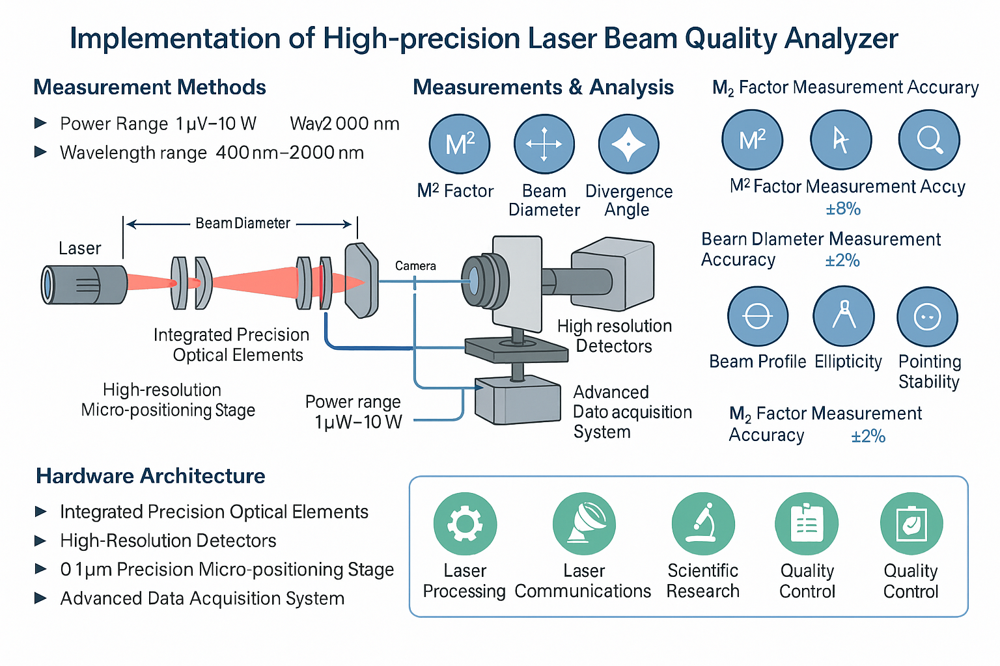

图 1: 激光光束质量分析仪系统架构图，展示了从激光源到数据采集、处理、分析的完整流程，包括光束整形、功率监测、光束质量评估等核心模块。
采用先进的光电探测技术，实现激光功率、能量、脉冲宽度等参数的高精度测量，测量精度达到±1%。
具备实时数据采集和处理能力，可连续监测激光光束质量变化，及时发现异常情况。
支持激光功率、能量、脉冲宽度、重复频率、光束质量因子M²等多个参数的同时测量和分析。
集成智能诊断算法，能够自动识别激光器工作状态，提供维护建议和故障预警。
本项目提出了一套基于单相机的激光光束质量分析仪实现方案，旨在通过图像处理方法测量和分析激光光束的关键质量参数，包括M²因子、光束直径、光束轮廓、椭圆度和指向稳定性等。
系统采用高分辨率CCD/CMOS相机作为核心探测器，配合精密光学组件和智能图像处理算法，在宽波长范围（400nm-2000nm）和功率范围（1μW-10W）内实现准确可靠的光束特性表征。
硬件架构简洁高效，集成高分辨率相机、精密光学组件和数据处理单元，软件平台提供实时图像处理、自动化测量工作流程和全面的分析报告功能。
系统的主要技术优势包括：
| 参数 | 指标值 | 单位 |
|---|---|---|
| 功率测量范围 | 1mW - 100W | W |
| 功率测量精度 | ±1% | - |
| 能量测量范围 | 1μJ - 1J | J |
| 脉冲宽度测量 | 10fs - 1ms | s |
| 重复频率 | 1Hz - 1MHz | Hz |
| 响应时间 | <1ms | ms |
高精度激光光束质量分析仪系统，采用先进的光电探测技术和智能诊断算法，实现激光功率、能量、脉冲宽度等多参数的同时测量。系统具备实时监测能力，测量精度达到±1%，响应时间小于1ms，广泛应用于激光器研发、激光加工、科研实验、医疗设备等领域。